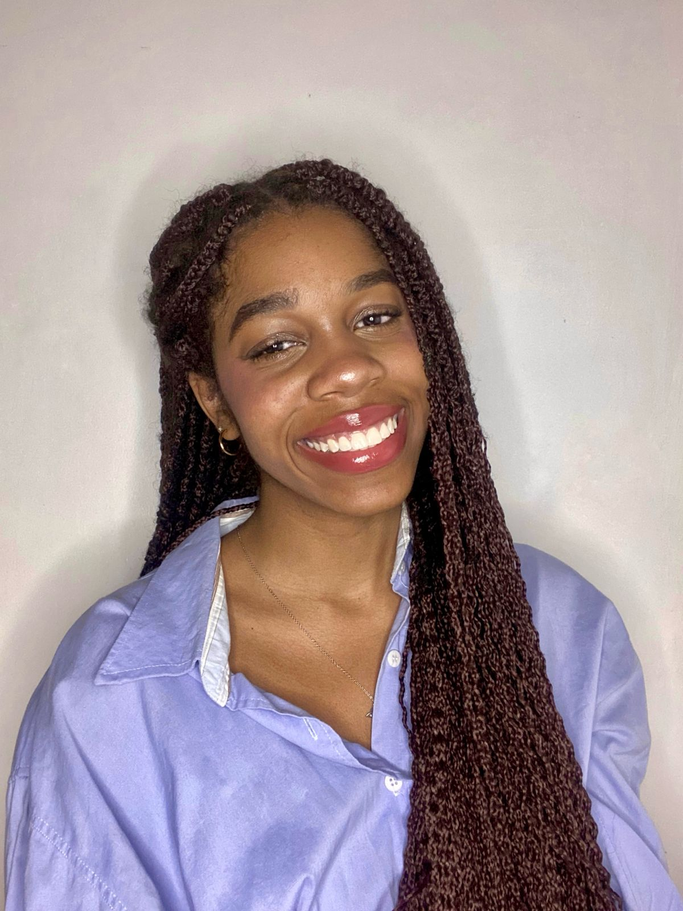

Olá! Sou Lalia Sadio, graduanda e pesquisadora com atuação em tecnologia e impacto social. Faço parte da Reabnet e atuo com tecnologias emergentes como IA, RV, jogos sérios e computação em nuvem. Me envolvo em projetos como o “Proteja Elas” e o mapeamento interativo do Cerrado. Sou apaixonada por transformar dados em narrativas visuais e promover inclusão por meio da tecnologia.
Você pode me encontrar nas redes ou enviar um e-mail para lalia.sadio@email.com